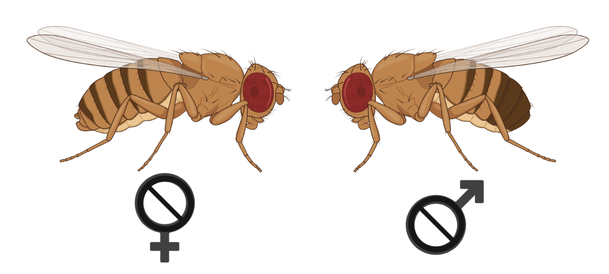
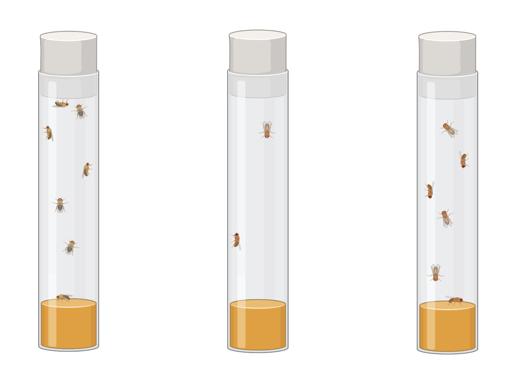

Chapter 4 Further analysis with DESeq2
4.1 Control for sex of fly

Here we will briefly cover a couple of slightly more complex models and how you would code them and extract the results. In our first model we looked at a single term (sex).
For the second model, we may be primarily interested in the selection regime of the lines of flies. But, given that there are big differences due to sex of fly, we might want to control for this. We can fit a model of the form expression = sex + regime.
Make sure you are in the ‘Practical_two’ directory, have the ‘usernaseq’ environment activated, open a new Jupyter notebook called “Suppl03-Further_DESeq2” and read in the count data and the meta data for the experiment into a new code cell.
library("DESeq2")
counts<-read.table("genecount.set1.tsv", header=T, row.names = 1)
coldata<-read.table("design.set1.tsv", header=T, row.names = 1)
# Make sure the metadata columns sex and regime are read as factors
coldata$sex <- factor(coldata$sex)
coldata$regime <- factor(coldata$regime)We can now create the DESeq data set for the additive model. As the variable of interest in this case is the “regime”, we put it at the end of the formula and control for the factor “sex”.
dds2 <- DESeqDataSetFromMatrix(countData = counts,
colData = coldata,
design= ~ sex + regime)As before remove lowly expressed genes and run the differential expression analysis.
keep <- rowSums(counts(dds2)) >= 10
dds2<- dds2[keep,]
dds2 <- DESeq(dds2)We are now ready to extract our results from the analysis we have run. First we will compare the evolved (monogamous) regime against the baseline population (the order that we specify the contrast here is important, with B being the reference).
resEB<-results(dds2, contrast=c("regime", "E", "B"))
head(resEB)
summary(resEB)Positive fold changes in gene expression in our results mean that expression was higher for these genes in the evolved line compared to the baseline.
We can do the same again but compare the multiply mated regime against the baseline:
resMB<-results(dds2, contrast=c("regime", "M","B"))
head(resMB)
summary(resMB)4.2 Fit with multiple groups

The last model we will show is how to fit a model with multiple groups. In the fly example here, it might be the case that a gene is differentially expressed between regimes M and E, but only in one sex of fly. This is an experiment on sexual selection, so it’s reasonable that selection might act on different genes in the males and the females.
Interaction terms can be added to the design formula, but it can be much simpler to combine the factors of interest into a single factor with all combinations of the original factors. We can then change the design formula to include just this factor. We have done this for the “group” factor in our metadata. For example, BFCH is a female fly from regime B and we can compare the other all other groups (e.g. male-B, female-E, male-E, female-M & male-M) against each other.
# Make sure the metadata column group is set up as a factor
coldata$group <- factor(coldata$group)
# Set the new model
dds3 <- DESeqDataSetFromMatrix(countData = counts,
colData = coldata,
design= ~ group)Filter and run the analysis as before.
keep <- rowSums(counts(dds3)) >= 10
dds3<- dds3[keep,]
dds3 <- DESeq(dds3)We can now extract the results of interest as we did in the previous example. Let’s look at the regime M vs E contrast, first in females:
resMFvsEF<-results(dds3, contrast=c("group", "MFCH", "EFCH"))
head(resMFvsEF)
summary(resMFvsEF)In this case positive expression changes mean that gene expression was higher in multiply mated females compared to evolved (monogamous) females.
And then in males:
resMMvsEM<-results(dds3, contrast=c("group", "MMCH", "EMCH"))
head(resMMvsEM)
summary(resMMvsEM)For more information on model design and set up see the DESeq2 vignette.